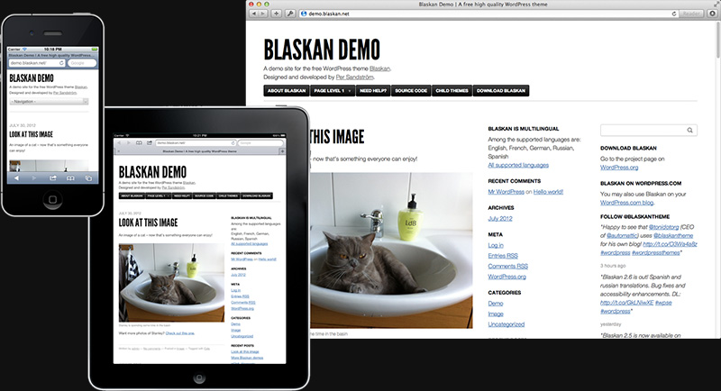

Your visitors will love it
Device friendly
Blaskan is a responsive theme built for smartphones, tablets, netbooks, laptops and desktops. Your site will work great on a lot of devices.
For all users
Web Accessibility is highly prioritized, following best practices and the WAI-ARIA specfication as well as possible.
Among the supported browsers are:
- Firefox
- Safari
- Chrome
- Opera
- Internet Explorer 7+
- Android
- Mobile Safari (iPhone/iPad/iPod touch)
- Opera Mini
Multilingual
A big thank you to all translators who has made Blaskan available in:
- Danish
- Dutch
- English
- French
- German
- Norwegian
- Polish
- Romanian
- Russian
- Spanish
- Swedish
Five different layouts
Either use a wide or narrow content column and up to two sidebars.
Customize it
Typography
Choose between League Gothic or Helvetica/Arial for headings.
Images
Use a custom header and/or background image.
Colors
Pick a different color for links as well as for the background.
Dig deeper with child themes
Blaskan is developed with child theming in mind and is easy and flexible to override to make it work the way you want.
Get started quick and easy with the child theme boilerplate.